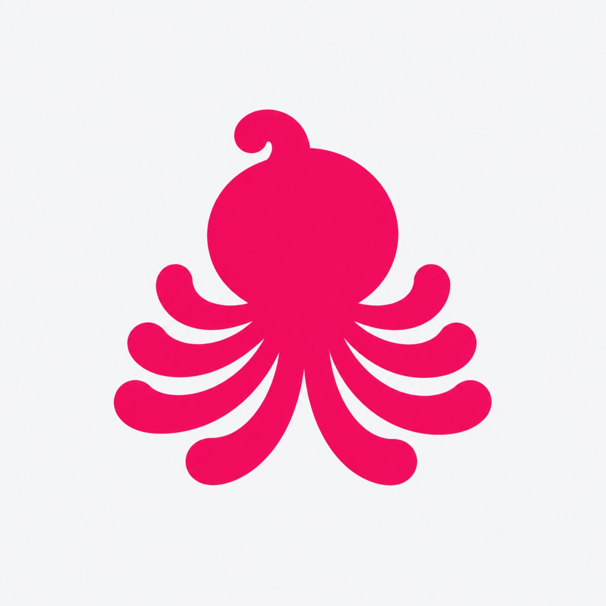
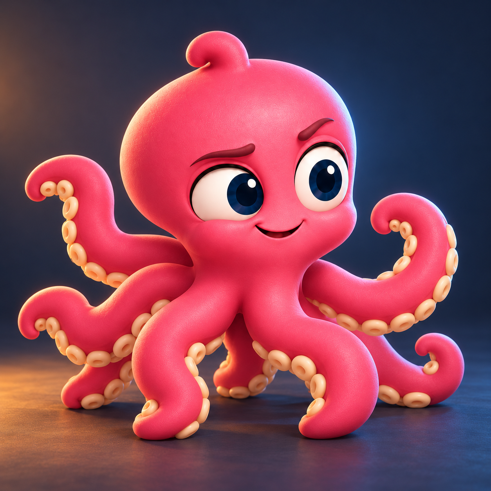

Work
Disponible en este navegador
Docs, Sheets, Slides, Formularios, Dibujos, Notas y PDF. Los archivos se quedan en el dispositivo. Abrir Work entra en su inicio: no lanza un editor vacío desde la portada.
Propuesta para revisión. No está publicada y no modifica orvupi.com.

Cultura, herramientas y comunidadHerramientas para crear, aprender y explorar Web3. El pulpo acompaña. El trabajo empieza en la herramienta que elijas.

Imagen fija. No hay un vídeo aprobado.
Documentos, hojas, presentaciones, formularios, dibujos, notas y PDF.
Plantillas y diseños en este navegador. Tu marca, no la de ORVUPI.
Mercados públicos. La verificación on-chain está en Verify, aparte del ranking.
Artículos, rutas, prácticas, glosario y tu progreso. Sin cuenta.
Escribes en esta pestaña. No hay un modelo propio conectado.
Herramientas
Los enlaces Abrir salen de esta propuesta y entran en el producto actual. Esta página no sustituye el editor, el lienzo ni las tablas.
Disponible en este navegador
Docs, Sheets, Slides, Formularios, Dibujos, Notas y PDF. Los archivos se quedan en el dispositivo. Abrir Work entra en su inicio: no lanza un editor vacío desde la portada.
Disponible en este navegador
Catálogo, plantillas, diseños locales y exportación. Las plantillas siguen neutras: esta propuesta no mete el logotipo dentro de los diseños.
Lectura pública
Ranking, categorías, favoritos y el resto de la lectura de mercados. Una consulta puede fallar. Aquí no hay cotizaciones: los números viven en Sonar, con su fuente.
Disponible, sin cuenta
Artículos, rutas, prácticas, glosario y progreso local. Las rutas antiguas de Lab, Cuaderno, Pares, Comparar y Aprender siguen llevando a Academy.
Sin modelo propio
Puedes escribir en esta pestaña. No hay un modelo propio conectado. El texto se queda ahí hasta que lo guardes en Work. Proyectos sigue pendiente en la herramienta.
Entrada de Sonar
Verificación de una dirección. No es el ranking de mercados. Misma familia que Sonar, otra tarea.
Primeros pasos
Si quieres entender un concepto antes de usarlo, Academy está al lado. No hace falta comprar nada para abrir una herramienta local.
Work, Studio, Sonar, Academy o ARQIVEN. El índice de arriba ya nombra cada una.
Entras en la herramienta actual. Lo que guardes sigue en este navegador.
Una ruta, un término o una práctica. El progreso de Academy se queda en el dispositivo.
Primeros pasos, en orden.
Un término, con su definición.
El laboratorio distingue el ejercicio de una operación real.
Qué es ORVUPI
Somos ORVUPI. Un pulpo curioso, una comunidad por construir y herramientas para explorar Web3. Ven a aprender, crear y compartir.
Construcción
Novedades y Tablero conservan el historial publicado. Esta propuesta no inventa fechas, usuarios ni auditorías.
Notas de desarrollo, con la fecha que ya tienen.
Estado, evidencias y pruebas. Una idea no es una entrega.
Visión · Metodología · Marca · Seguridad · Contribuir
Token
Esta propuesta no certifica el estado on-chain ni añade una dirección nueva. Los límites están en Riesgos, no en la portada.
Bj6orFgn4UegmXtQ4WHcBsHSjjfgruHcScCSeauW1TyU
Es la dirección que publican la página del token y la configuración del repositorio. El README de la raíz todavía dice que no hay una dirección verificada publicada: esa contradicción sigue abierta y no se resuelve aquí.
Mapa
Rutas del producto actual. Los idiomas de la web siguen en sus URL. Esta propuesta está solo en español.
/Portada actual. Esta propuesta no la sustituye./work/Work, con sus rutas profundas y los archivos locales./studio/Studio, catálogo, editor y exportaciones./sonar/Sonar, mercados y lectura pública./verify/Verificación. Alias de entrada, no el ranking./academy/Artículos, rutas, prácticas, glosario y progreso./aprender/Sigue hacia el glosario de Academy./lab/Sigue hacia la práctica de laboratorio./pares/Sigue hacia la curva en vivo./cuaderno/Sigue hacia el cuaderno de Academy./comparar/Sigue hacia el artículo de intercambios y liquidez./arqiven/Escritura en la pestaña, sin modelo propio./memes/Galería, búsqueda y colecciones./community/Comunidad y canales./contribuir/Cómo proponer una mejora o un fallo./novedades/Notas de desarrollo./tablero/Estado y evidencias./vision/Visión, distinta de lo que ya está disponible./methodology/Cómo leer las herramientas./marca/Identidad y condiciones de uso./security/Canales oficiales./risks/Límites y riesgos. Único sitio de esos avisos./legal/Privacidad y contacto./token/Dirección publicada y sus fuentes./en/ /pt-br/ /ja/ /ko/Los cinco idiomas de la web actual. Esta maqueta no los traduce.